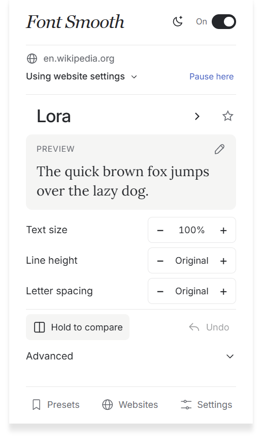
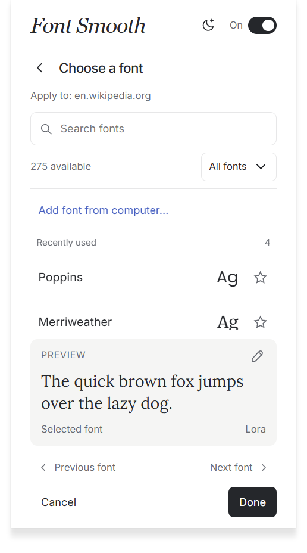
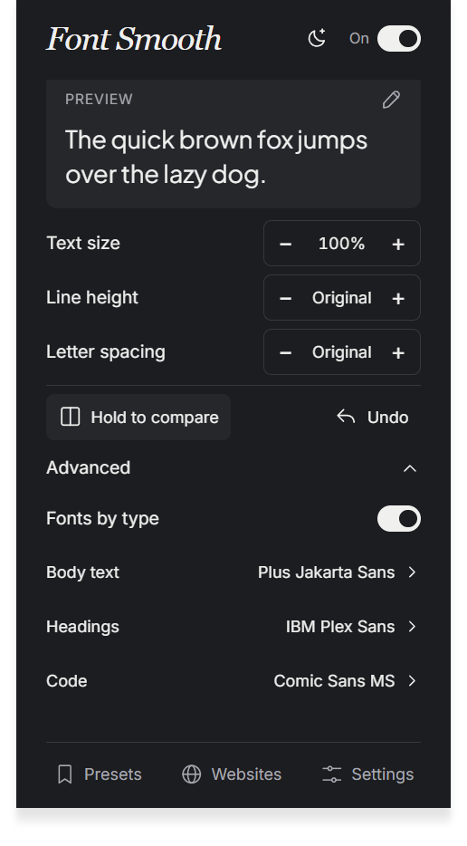
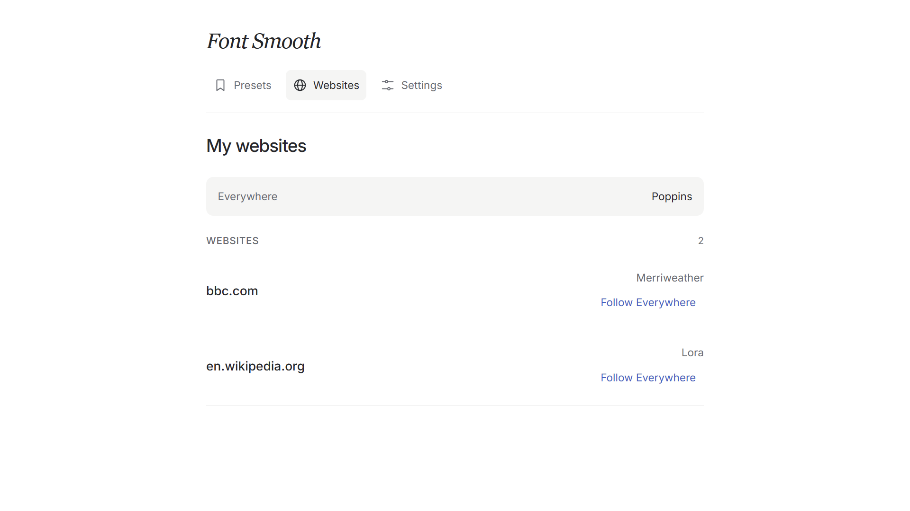
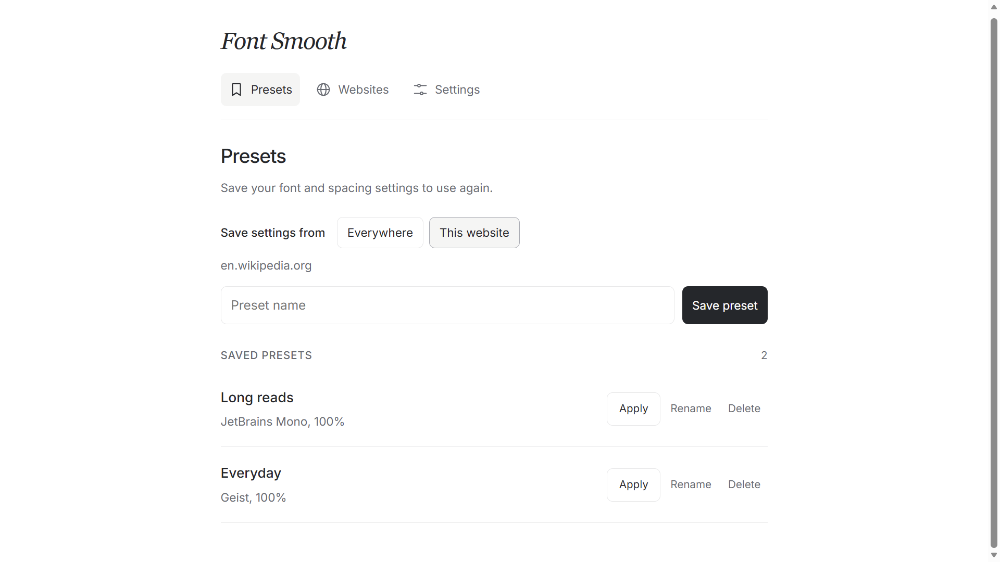

Choose your fonts.
Browse included and device fonts, or add a custom font. Keep favorites close for the next time you want a change.
A font changer for your browser
Change website fonts, text size and spacing. Use the same settings everywhere, or save different settings for each website.
Free to use. Optional Pro upgrade for $5.99 one-time.
Change text size, line height and letter spacing. Hold to compare your changes with the original page.
Choose from included fonts, fonts on your device, or your own font files.
Explore the controls

Select a screenshot to enlarge.
Browse included and device fonts, or add a custom font. Keep favorites close for the next time you want a change.
Adjust text size, line height and letter spacing. Compare your changes with the original, or undo them.
Use your settings everywhere, save a website profile, or pause font changes on a specific site.

Font Smooth Pro
Choose separate fonts for body text, headings and code. Save more website profiles and presets, and keep a backup of your setup.
Compare Free and ProWebsite profiles
Keep a different font for each website, or let it follow your Everywhere settings.

Saved presets
Save your font and spacing settings. Apply a saved preset when you want to switch setups.

The core typography controls are free. Pro gives you more saved setups and finer control.
Free
$0
Start with the essentials.
Font Smooth Pro
$5.99 USD
One-time purchase. No subscription.
Use an email address you can access. Your license key will be sent there after checkout.
Buy Font Smooth ProBuy through Dodo Payments using an email address you can access.
Copy it from the return page if shown. Dodo also sends it by email. Check Spam/Junk if it is missing.
Open Settings → Activate a license. Paste your key and select Activate.
Already purchased? Find my license. You do not need to buy again.
Secure checkout by Dodo Payments. Local currency and applicable taxes are shown before you pay. The checkout currently uses the Zema Tools brand.
Font Smooth is available from the official Firefox, Microsoft Edge and Opera extension stores. Choose your browser above to install it.
Font Smooth works on supported webpages. Browser settings pages, extension stores and some protected pages do not allow font changes. You can pause it on individual websites.
Your typography preferences, presets and website profiles are stored in your browser. Pro activation contacts the license service. Read the Privacy Policy for details.
No. Font Smooth Pro costs $5.99 USD as a one-time purchase. The final currency and any applicable taxes are shown in Dodo checkout.
After checkout, copy your license key if it is shown on the return page. Dodo also emails it to the address you used at checkout. Open Font Smooth → Settings → Activate a license, paste the key and select Activate. If the email is missing, follow Find my license.
Search the email account you used at checkout for Dodo Payments or Font Smooth. Check Spam/Junk and Promotions too. If you find it in spam, mark it as not spam. Still missing? Visit Find my license for support. You do not need to buy again.
A license supports up to five active browser installations. Deactivate an installation to free a slot for another supported browser.
Font Smooth is developed by Amanuel Yohannes. Its existing Dodo Payments checkout uses the Zema Tools brand. The product you are buying is Font Smooth Pro.
Contact support with your purchase details. See the Refund Policy for how requests are handled through Dodo Payments and your applicable consumer rights.
I’m Amanuel Yohannes, the developer of Font Smooth. For setup help, license questions or feedback, you can reach me directly.